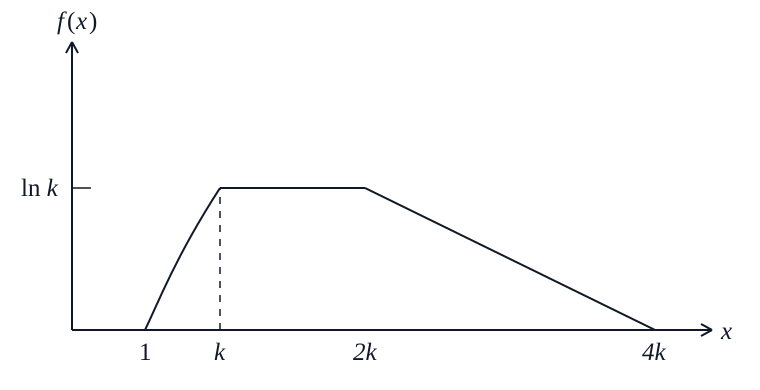

(i)

(ii)
\[
\begin{cases}
a-2bk=\ln k\\
a-4bk=0
\end{cases}
\implies
\begin{cases}
a=2\ln k\\
b=\dfrac{\ln k}{2k}
\end{cases}
\]
Area:
\[
\int_1^k\ln x\,dx
+\int_k^{2k}\ln k\,dx
+\int_{2k}^{4k}(a-bx)\,dx=1
\]
\[
(k\ln k-k+1)+k\ln k+k\ln k=1
\]
\[
\implies k=e^{\frac13}
\]
\[
a=\frac23,\qquad b=\frac{1}{6e^{\frac13}}
\]
(iii)
\[
e^{\frac13}>1
\]
\[
\int_1^k f(x)\,dx
=k\ln k-k+1
=1-\frac{2k}{3}<\frac12
\]
\[
\int_1^{2k}f(x)\,dx
=1-\frac{2k}{3}+\frac{k}{3}
=1-\frac{k}{3}>\frac12
\]
Median \(m\) lies in \([k,2k]\).
\[
\int_1^m f(x)\,dx=\frac12
\]
\[
\int_1^k\ln x\,dx+\int_k^m\ln k\,dx=\frac12
\]
\[
1-\frac{2k}{3}+(m-k)\ln k=\frac12
\]
\[
m=3e^{\frac13}-\frac32
\]